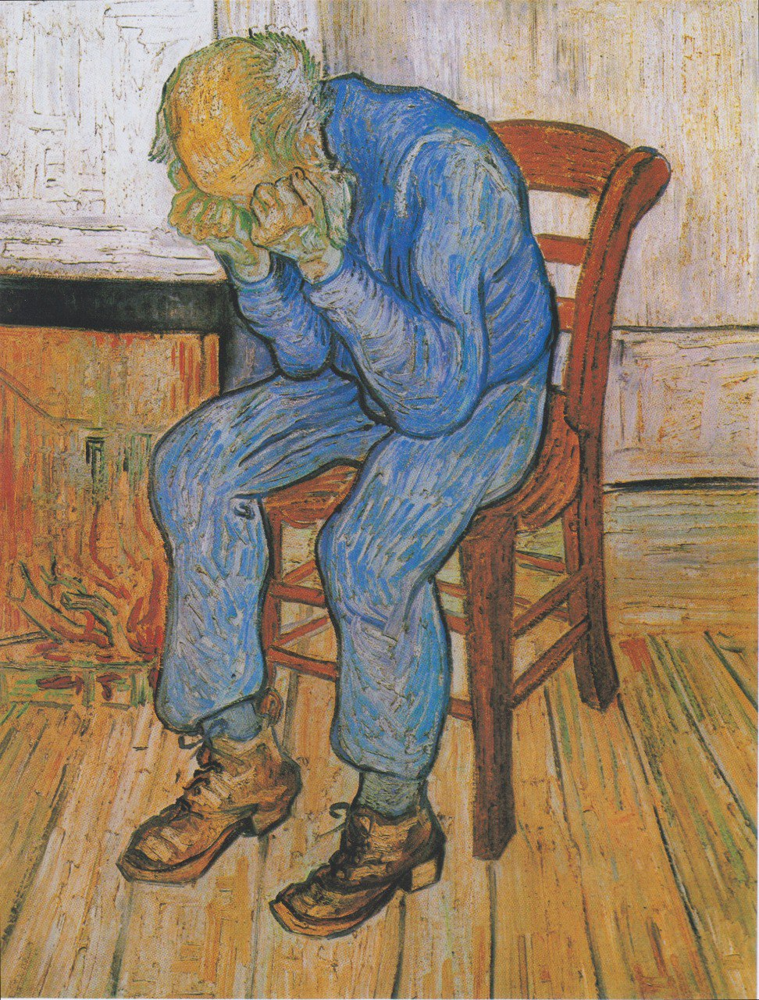
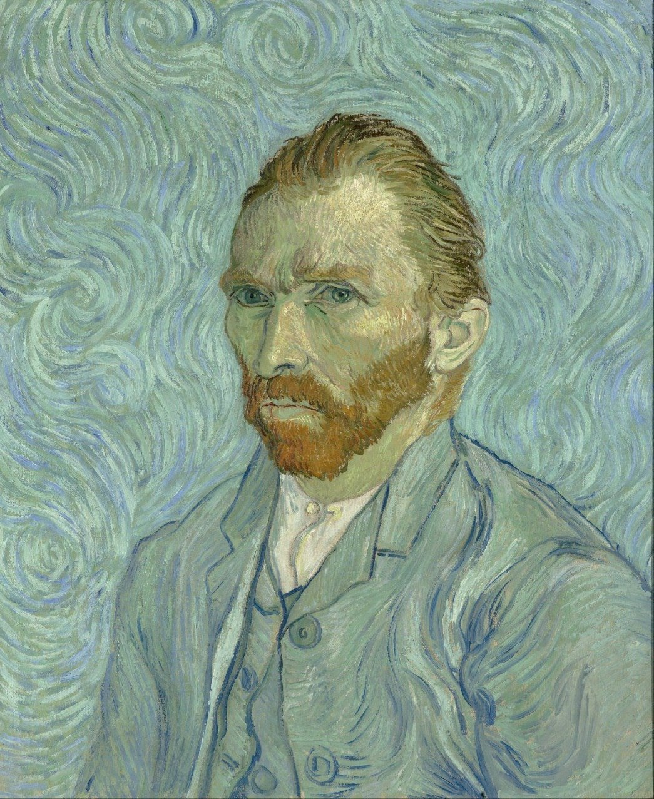

The Starry Night
Even though this painting has gained notoriety over the years, no many people know the story behind it. This masterpiece was painted after Van Gogh had a breakdown that resulted in the self-mutilation of his left ear. He was admitted to Saint-Paul-de-Mausole lunatic asylum, and during his 12-month stay he painted The Starry Night.

Most famous Van Gogh Paintings

- Title: Sunflowers
- Year: 1888
- Medium: Oil on canvas
- Dimensions: 98.1 cm x 73 cm (36.3 in x 29 in)
- Location: The National Gallery, England

- Title: Sorrowing old man ("At Eternity's Gate")
- Year: 1888
- Medium: Oil on canvas
- Dimensions: 81 cm x 65 cm (31. in x 25.5 in)
- Location: Kröller-Müller Museum, Netherlands

- Title: Self-portrait
- Year: 1889
- Medium: Oil on canvas
- Dimensions: 65 cm x 54 cm (25.59 in x 21.25 in)
- Location: Musée d'Orsay, France

- Title: Le docteur Paul Gachet Dr Paul Gachet
- Year: 1890
- Medium: Oil on canvas
- Dimensions: 68 cm x 57 cm (26.77 in x 22.44 in)
- Location: Musée d'Orsay, France
“If I am worth anything later, I am worth something now. For wheat is wheat, even if people think it is a grass in the beginning.”
― Vincent van Gogh
Surprisingly, Van Gogh was not appreciated during his life time
Let's not make the same mistake and give a look at the work of our fellow classmates